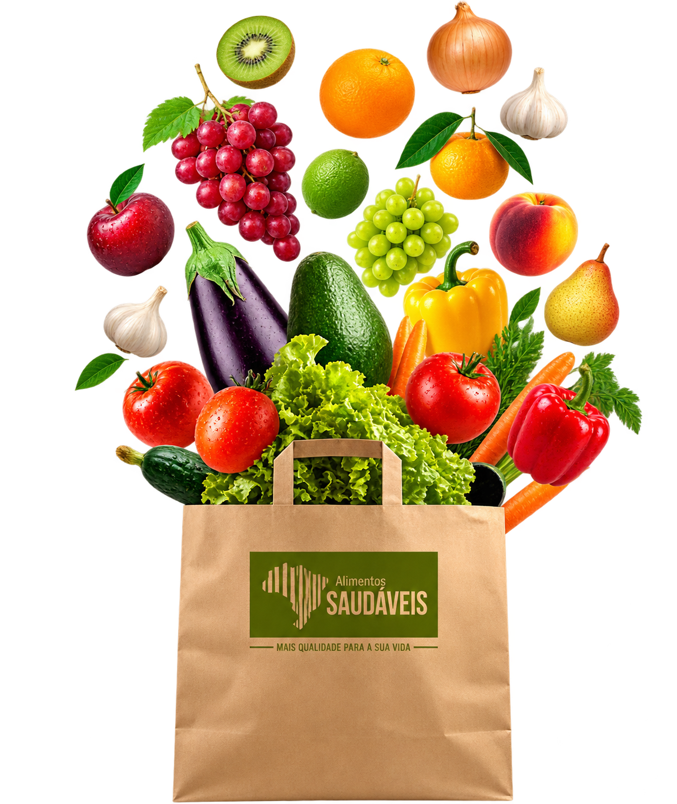
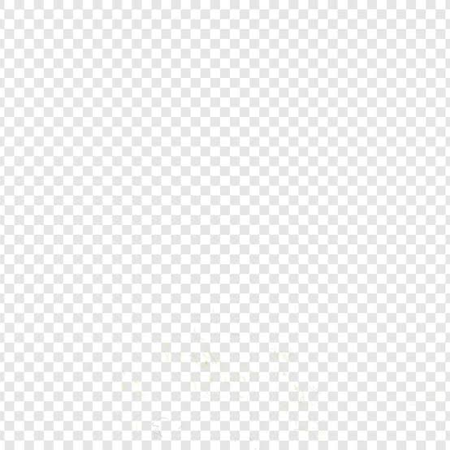

TRABALHANDO POR UM FUTURO MAIS
SAUDÁVEL E SUSTENTÁVEL!
FAÇA PARTE DESSA MUDANÇA!
QUEM SOMOS?
A NutriVida é uma instituição sem fins lucrativos. Somos parte de um movimento global de promoção de saúde e sustentabilidade que encoraja instituições do poder público e indivíduos a aumentarem o consumo de alimentos de origem vegetal, como frutas, legumes, verduras e grãos, que devem ser a base de uma alimentação saudável. Acreditamos que as políticas alimentares podem ajudar a salvar o planeta e contribuir para a saúde das pessoas no presente e para futuras gerações.
POR QUE?
A NutriVida foi criada com o propósito de promover uma relação mais saudável e consciente com a alimentação. A instituição busca oferecer:
- Informações simples, acessíveis e confiáveis sobre nutrição e saúde;
- Explicar e ajudar a manter uma alimentação equilibrada;
- Incentivar escolhas mais conscientes e hábitos saudáveis;
Tudo isso para melhorar a qualidade de vida e bem-estar.
Confira os benefícios ⮕
NOSSA EQUIPE
-

Alice Cristini Schmitz Bernardo
-
Felipe Gabriel Fink Vieira
-
Luciana Falk Almeida
-
Maria Lucia Feltrim
-
Matheus Hilario
-
Pedro Barrim
AÇÕES COMUNITÁRIAS
A NutriVida é responsável por organizar ações comunitárias e socias. Algumas delas são:
-
Arrecadação de Alimentos
A NutriVida acredita que uma alimentação adequada deve estar ao alcance de todos. Por isso, incentivamos campanhas de arrecadação de alimentos para contribuir com famílias e pessoas que enfrentam dificuldades. Além de ajudar quem precisa, essas ações também fortalecem a solidariedade e mostram como pequenas atitudes podem fazer a diferença na comunidade.
-
Educação Alimentar
Acreditamos que conhecer melhor os alimentos é um passo importante para desenvolver hábitos mais saudáveis. Por meio da educação alimentar, buscamos compartilhar informações simples e acessíveis sobre nutrição, escolhas alimentares e a importância de uma alimentação equilibrada. Dessa forma, crianças, jovens e famílias podem aprender e fazer escolhas mais conscientes no dia a dia.
-
Hortas Comunitárias
As hortas comunitárias são uma maneira de aproximar as pessoas da natureza e da produção dos próprios alimentos. A NutriVida incentiva a criação e o cuidado coletivo com esses espaços, promovendo o consumo de alimentos frescos e saudáveis. Além disso, as hortas podem transformar espaços da comunidade em locais de aprendizado, convivência e colaboração.
-
Parcerias Locais
Acreditamos que cuidar da saúde e da alimentação é uma responsabilidade que pode ser compartilhada por toda a comunidade. Por isso, valorizamos parcerias com escolas, instituições, projetos sociais e outras iniciativas locais. Juntos, podemos desenvolver ações que incentivem hábitos saudáveis, promovam conhecimento e contribuam para uma comunidade mais unida e consciente.